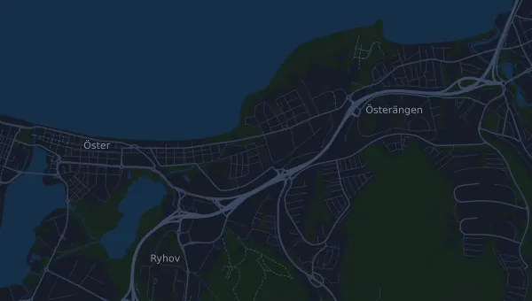

Jönköping Half Marathon 21 km
- Distancia
- 21,1 km
- Desnivel positivo
- ↑ 242 m
- Punto más alto
- 155 m s. n. m.
- Superficie
- Asfalto
- Perfil
- Ligeramente ondulado
- Salida
- 10:00 h
Perfil de altitud
Prepárate con Mila
Mila es un coach de running en una app. Si añades una carrera a tu plan, el coach planifica tus semanas hasta la salida según tu forma y te da un pronóstico de tiempo y un plan de ritmo, hidratación y energía para el recorrido.

La sesión justa. El día justo.
El recorrido

Sobre el recorrido
Jönköping Half Marathon es una carrera en ruta de 21,1 km (Jönköping, Suecia). El recorrido acumula 242 m de desnivel positivo y 241 m de desnivel negativo, 11 m por km, así que es ligeramente ondulado. El punto más alto está a 155 m sobre el nivel del mar y el más bajo a 86 m.
La subida más grande empieza en el km 0,6: 60 m de desnivel en 8 km, con un 0,7 % de media, hasta los 152 m. En total, el recorrido tiene 2 subidas de al menos 25 m; la última empieza en el km 11,3.
En la app Mila, el coach describe el recorrido en detalle en tu idioma y planifica tu ritmo y tu avituallamiento.
Subidas
| Empieza en | Longitud | Desnivel | Pendiente | Cima (m s. n. m.) |
|---|---|---|---|---|
| km 0,6 | 8 km | 60 m | 0,7 % | 152 |
| km 11,3 | 2,2 km | 25 m | 1,1 % | 119 |
Antes de la salida
Horas de salida
- 10:00 h
Fuente: jonkopingmarathon.se, consultado el 25 de noviembre de 2026
Tabla de ritmos
Jönköping Half Marathon 21 km en 1:30:00 – ritmo por km y tiempos de paso
4:16 min/km · km 5: 21:20 · km 10: 42:39 · km 15: 1:03:59 · meta: 1:30:00
Jönköping Half Marathon 21 km en 1:45:00 – ritmo por km y tiempos de paso
4:59 min/km · km 5: 24:53 · km 10: 49:46 · km 15: 1:14:39 · meta: 1:45:00
Jönköping Half Marathon 21 km en 2:00:00 – ritmo por km y tiempos de paso
5:41 min/km · km 5: 28:26 · km 10: 56:52 · km 15: 1:25:18 · meta: 2:00:00
Jönköping Half Marathon 21 km en 2:15:00 – ritmo por km y tiempos de paso
6:24 min/km · km 5: 31:59 · km 10: 1:03:59 · km 15: 1:35:58 · meta: 2:15:00
Los tiempos suponen un ritmo constante de principio a fin. Es pura aritmética, no un pronóstico: en las subidas, entre la gente y en los avituallamientos el ritmo varía.
Preguntas frecuentes
¿Cuándo es Jönköping Half Marathon 21 km?
Jönköping Half Marathon 21 km se celebra el sábado, 28 de agosto de 2027. Comprueba la fecha y la hora de salida con el organizador.
¿A qué hora sale Jönköping Half Marathon 21 km?
Según el organizador: 10:00 h.
¿Cuánto mide Jönköping Half Marathon 21 km y cuánto desnivel tiene?
La carrera tiene 21,1 km, con 242 m de desnivel positivo y 241 m de desnivel negativo. El punto más alto está a 155 m sobre el nivel del mar.
¿Cómo es el recorrido de Jönköping Half Marathon 21 km?
El recorrido es ligeramente ondulado, con 11 m de desnivel por km de media. Tiene 2 subidas de al menos 25 m; la mayor empieza en el km 0,6: 60 m en 8 km. La salida y la meta están en el mismo lugar. Se corre sobre asfalto.
¿Cómo reparto el ritmo en Jönköping Half Marathon 21 km?
Busca un esfuerzo constante más que un ritmo constante: deja que el ritmo baje en las subidas, recupéralo cuando el terreno se allane y contente en los primeros kilómetros. Las subidas más grandes empiezan en el km 0,6 y km 11,3. En Mila tienes un plan de ritmo para este recorrido, según tu propia forma.
Más carreras como esta
Más carreras cerca
- Jönköping Marathon 42,2 km28 de agosto de 2027 · Jönköping, Suecia
- Midnattsloppet Malmö 10 km28 de agosto de 2027 · Malmö, Suecia
- Midnattsloppet Malmö 5 km28 de agosto de 2027 · Malmö, Suecia
- Stockholm Halvmaraton 21 km21 de agosto de 2027 · Stockholm, Suecia
- Fjällmaraton Sälen 42 km21 de agosto de 2027 · Sälen (Lindvallen, Experiumtorget), Suecia
- Helsingborg Marathon 42,2 km4 de septiembre de 2027 · Helsingborg, Suecia
Prepárate con Mila
La sesión justa. El día justo.
Los datos proceden del archivo del recorrido y de la información del organizador. Comprueba la fecha, las horas de salida y el reglamento con el organizador.
Mila no está vinculada al organizador ni a los patrocinadores de la carrera, ni está patrocinada o avalada por ellos. Los nombres y las marcas pertenecen a sus propietarios. ¿Organizador o titular de derechos? Solicitar un cambio o la retirada